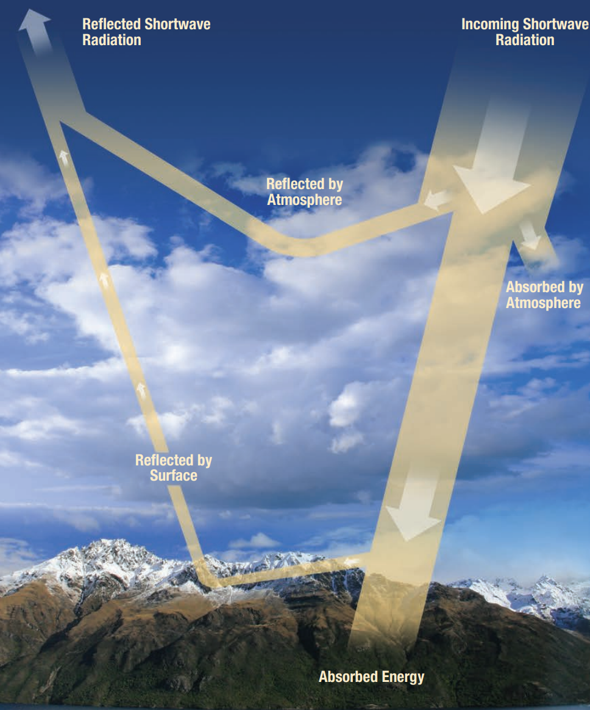
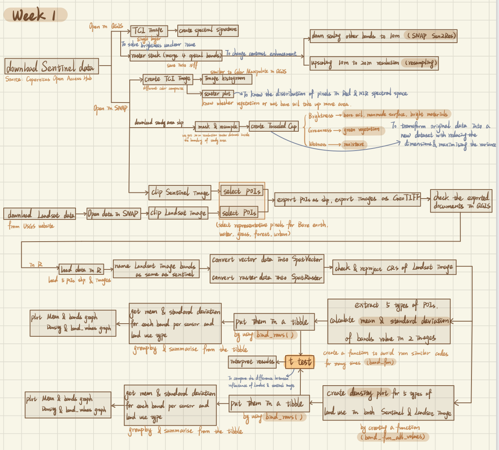
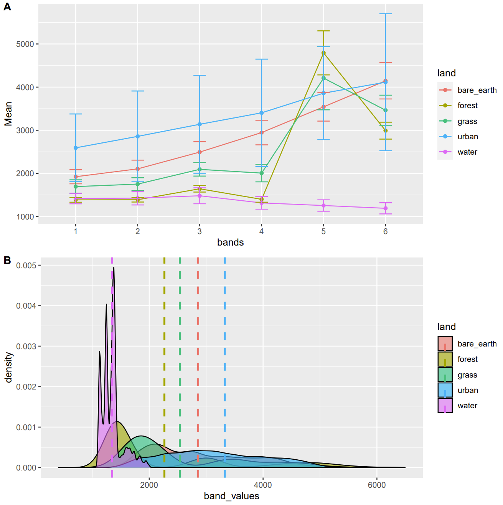
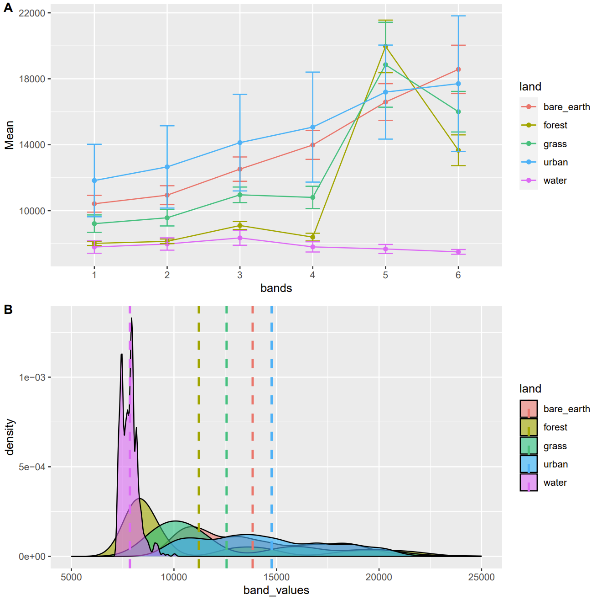
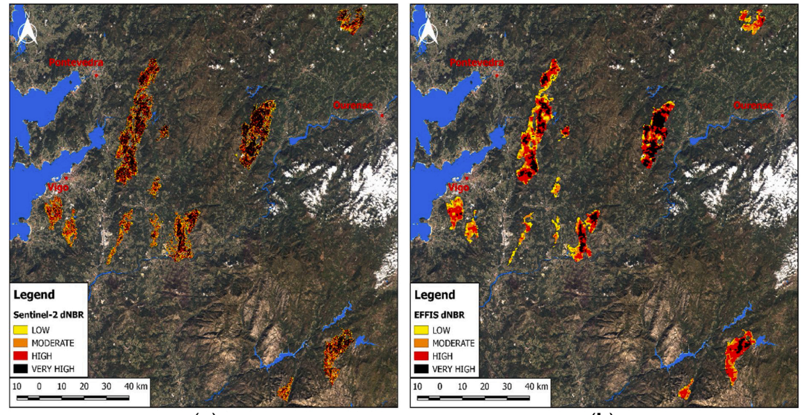
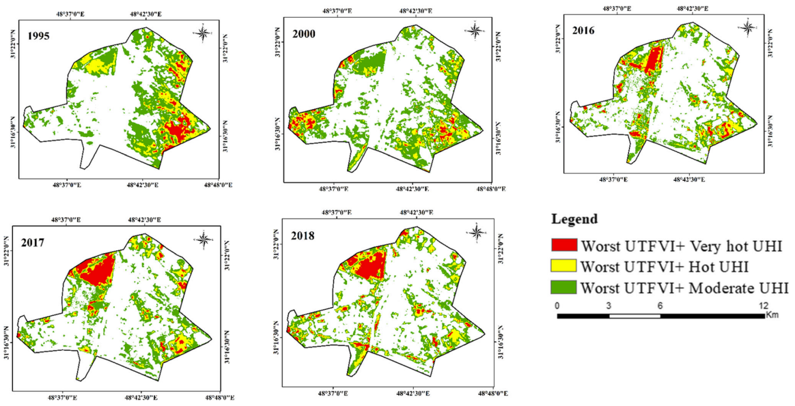
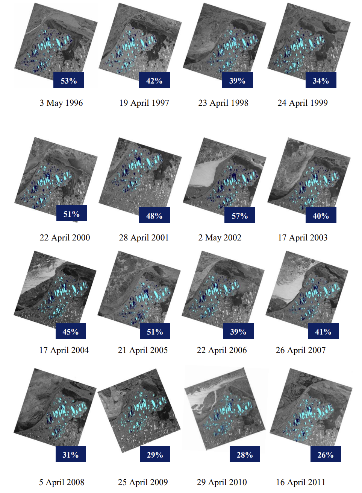

1 Week 1 Getting started with remote sensing
In this week, we focused on presenting the concept of remote sensing and introducing the basics terms related to remote sensing.
1.1 Summary
Remote sensing was first created for military and warfare purposes, but is now also used in a wide range of civilian applications (Brady 2021).
1.1.1 Summary of lecture
In fact, in our real life, applications for remote sensing are relatively common and there are a large number of satellites currently in use (Garcia 2015).
Remote sensing can be generally divided into two types based on different types of sensors, one is passive sensor, the other is active sensor. Passive sensor usually does not emit anything, it just reflects energy (electromagnetic waves) from the sun, for instance, satellite sensor. Active sensor emits electromagnetic waves actively and receive the energy back, such as Radar and LIDAR. The following picture shows the difference between passive remote sensing and active remote sensing.
There is a term called radiation budget, which consists of four components, including energy entering, reflected, absorbed, and emitted by the Earth system , and is mainly used to evaluate the degree to which energy is balanced through the more complex processes of propagation, absorption, and reflection (Butcher 2016).

Therefore, electromagnetic radiation (EMR) from the sun is different with the energy arrive the earth surface, since the energy can be scatter by the atmosphere. Atmosphere scatter can be divided into three types, including Rayleigh, Mie and non selective, which is depends on the sizes of particles and the wavelengths.
These scattering phenomena are also very common in everyday life, for instance, the sky is blue is because Raleigh scattering happens. Similarly, we can explain the black sky in the space and blue ocean. Remote sensing is based on the identification of different types of features through the unique spectral signatures formed by the different reflections and absorptions of features in response to EMR (Brady 2021).

However, passive remote sensing has a very large disadvantage that the quality of imagery depends on the weather and cloud cover. We can solve this problem by using active sensors, for instance, Synthetic Aperture Radar (SAR), which can see through clouds, volcanic ash, and other bad atmospheric conditions based on longer wavelengths.
Remote sensing imagery is raster data, but there are a variety of data storage formats, including band interleaved by line, band sequential, band interleaved by pixel, and GeoTIFF.
There are four resolutions to describe the quality or characteristics of the imagery, including spatial resolution (size of raster cells), spectral resolution (define the shortest wavelength intervals), temporal resolution (revisit time), and radiometric resolution (the ability to detect the smallest differences in energy, or the sensitivity of the sensor).
About the orbits of the sensors, there are geosynchronous obits and geostationary orbits.
Advantages and Disadvantages of remote sensing Jensen (2015)
Notice:
- The direction of sunlight might influences the image, and may even affect the interpretation of the images.
- Spectral signatures can be discrete and continuous.
1.1.2 Summary of practical
The practical part of this week mainly focus on using QGIS and SNAP two software to get familiar with remote sensing satellite images and preliminarily understand the supervised classification of images, and intuitively understand the difference of land use in the study area and the difference of spectral characteristics of different land use types through statistical maps. This is very important for the next few weeks of study. Although I may not rely too much on software such as SNAP to process and analyze remote sensing images, it can help me understand the meaning of corresponding R codes and the content in the course. Following Figure 4 is the overall workflow of the practical in this week.

The first main session is that I downloaded Sentinel-2 data from Copernicus Open Access Hub website based on several criteria and loaded data into QGIS first to try to use familiar software (QGIS) to get familiar with the academic terms we learnt in the lecture, including true color satellite image, spectral signature, and raster stack. I also did down-scaling and up-scaling based on QGIS resampling tool to make all the bands that I collected are with the same resolution (image enhancement) before subsequent process and analysis.
The second main section is create Tasseled Cap within the study area after mask and resample the imagery to get three more bands, including brightness, greenness, and wetness. The process of generating Tasseled Cap is a process to transform original data into a new data set with reducing the dimensions and maximizing the variance. Based on the different values of brightness, greenness and wetness correspond to different degrees of brightness, greenness and wetness, which can provide a preliminary understanding of land use types in the study area. Light areas in brightness image (Figure 5) should be bare soil, man-made surface, or areas covered by other bright materials. In the greenness image (Figure 6), green vegetation, such as forest, grassland and crops, can be clearly distinguished. In the wetness image (Figure 7), I can mainly distinguish the place with high moisture, such as pond, lake, and river.
Three components of Tasseled Cap formulas based on Sentinel imagery:
\(Brightness = 0.3037(B2)+0.2793(B3)+0.4743(B4)+0.5585(B8)+0.5082(B11)+0.1863(B12)\)
\(Greenness = -0.2848(B2)-0.2435(B3)-0.5436(B4)+0.7243(B8)+0.0840(B11)-0.1800(B12)\)
\(Wetness = 0.1509(B2)+0.1973(B3)+0.3279(B4)+0.3406(B8)-0.7112(B11)-0.45(B12)\)
Fig.5
Fig.6
Fig.7
The third section in this practical is creating five types of land use sample polygons shared by Landsat and Sentinel images were selected, including urban, water body, grassland, forest and bare soil, and export the drawn polygons and remote sensing images after mask and resampling to R studio. After that, I created two graphs show the mean and standard deviation of 5 types of POIs vs. band values of both Sentinel-2 and Landsat imagery, and two graphs are the density plots for the distributions of 5 types of land use with different band values of both Sentinel-2 and Landsat imagery. The mean and standard deviation of five types of land use pixels selected in study area vs. band values plot and density of different categories of land use pixels selected in the study area vs. band values graph of Sentinel-2 imagery show in the following Figure 8, and similar plots of Landsat-8 imagery show in Figure 9 below.


As can be seen from Figure A in Figure 8 and 9 above, when green vegetation, such as grassland and forest, is extracted from remote sensing images, red band and near infrared band can be mainly used, because there is a significant difference in pixel values between them and other bands. This feature is universally applicable to Sentinel-2 and Landsat-8 images. In addition, it can be seen from Figure B in FIG. 8 and FIG. 9 that water bodies are concentrated in a relatively small band value, while other land use types are not highly concentrated in a relatively narrow band range. This feature allows us to extract water from images with high accuracy.
There are some practical limitations. First of all, different research areas, time and other conditions correspond to different images. Some areas may not have rich land use types, or the contrast of land use types is not obvious, which may result in a low difference in results. In addition to different sensors, the differences in FIG. 8 and FIG. 9 May also result from different time of image acquisition, resulting in differences in spectral features of the same ground objects acquired. In addition, when SNAP creates polygons representing the five land use types, it may not be enough or representative enough, so that the results in Figure 8 and 9 May not fully meet the general applicability, but the general trend of change is similar.
- SNAP is another GIS software specific to Sentinel, which can be access to resampling, reproject, masking, classifying, PCA, and many other processing and analyzing methods.
- Before the subsequent process after load the data into R Studio, it is needed to unify the coordinate systems of the two images.
- Vector data need to be converted into SpatVector in R.
1. Why when TCI values are coded between 0 and 255 and radiometric resolution of Sentinel-2 is 12-bit means brightness levels from 0 and 4095 cannot be clear how this product has been made?
1.2 Application
1.2.1 Passive remote sensing application
There are many examples of passive remote sensing applications. For example, the near-infrared (NIR) band is important for passive remote sensing. The NIR band can be used in applications such as monitoring vegetation growth, crop pests and diseases (Butcher 2016). The main reason for this is that healthy vegetation absorbs red and blue light to synthesise chlorophyll, and the more chlorophyll is synthesised, the stronger the NIR reflection (Butcher 2016). In addition, Ramos et al. (2020) assessed soil salinity in Portugal based on vegetation indices computed from Sentinel-2 images.
In this learning diary, I will mainly summarize some examples of passive remote sensing applications based on Landsat and Sentinel series satellite imagery. Medium-resolution images like Landsat 8 and Sentinel-2 are more representative of the interactions between human and nature, and are more commonly used in studies targeting passive remote sensing because of the short revisit period of both satellites and the data are free (E. D. Chaves, C. A. Picoli, and D. Sanches 2020). Below are two relatively typical, specific examples of applying Sentinel-2 and Landsat 8 satellite imagery.
1.2.1.1 Application based on Sentinel data
Llorens et al. (2021) explored a method for simulating the area burned and the extent of forest damage following a forest fire on the border between Spain and northern Portugal, based on Sentinel-2 level 2A data. By comparing the spectral profiles of remote sensing images of this forest before and after the forest fire, Llorens et al. (2021) found that reflections in the green and near-infrared bands decreased significantly after the fire, while reflections in the short-wave infrared band increased more significantly. Therefore, Llorens et al. (2021) created Normalized Burn Ratio (NBR) and differenced NBR (dNBR) parameters to identify the surface of the fire and the severity of the burn. Finally, they concluded that this method is accepted for determine burn area and damage after forest fire. The authors chose to use Sentinel-2 data might because the high spatial resolution and short revisit time with low cloud cover and the data must be obtained as close as possible to the period of the forest fire.

In my opinions, based on their comparison of the simulated results with actual GPS data and more accurate remote sensing data, the dNBR coefficients calculated by Sentinel-2 are more accurate when applied to EFFIS data for the assessment of burn severity level after forest fires. Since Sentine-2 data has 4 more bands in the Red Edge spectral region (Segarra et al. 2020), I deem that the authors chose the relatively suitable data and methods as well. However, this method has only been applied to this one scenario and has not been applied to other forests in different situations, so it is not very rigorous to conclude that this method is accurate.
1.2.1.2 Application based on Landsat data
As the Landsat series of satellites evolved from generation to generation to Landsat 8, the spatial resolution of 30m was still retained, but the quantization was enhanced by carrying two sensors, OLI and TIRS (Hemati et al. 2021). In recent years, Landsat imagery has been widely used because of the thermal infrared band, which is applied to mine exploration and predicting mineral production (Frutuoso, Lima, and Teodoro 2021); and because the Landsat series of satellites collects remote sensing images uninterruptedly since the first satellite was launched in 1972 until 2023, Landsat imagery can be applied to long-term studies of land use and land cover type changes (Potapov et al. 2020).
With the rapid growth of cities around the world, the urban heat island effect is also increasing, and the average land surface temperature continues to grow (Amindin et al. 2021). Amindin et al. (2021) used Landsat 4, 5, 7, 8 images to compute land surface temperature, urban thermal field variance index and urban heat island index to investigate the intensity of urban heat island effect in Ahvaz, Iran and the change of distribution from 1995 to 2016. Amindin et al. (2021) finally found that the green area decreased by 50% and the area with high surface temperature expanded during this 21-year period.

I think their data selection is reasonable, because they need data with a large time span for analysis, and Landsat series data can meet this requirement, and the spatial resolution of Landsat 4, 5, 7, 8 images selected by the authors is 30m and they can both be used directly to calculate the LST, which can simplify the task of data processing part. In terms of analysis, they used support vector machine method for land use classification and quantified the impact of urban heat island effect by two parameters (UHI and UTFVI). Based on its land use classification accuracy (93%) and the comparison of the LST distribution and the plots combining UHI and UTFVI together, the feasibility, reproducibility, and accuracy of these methods are relatively high. However, other land use classification methods can also be tried to improve the accuracy of the classification.
1.2.2 Active remote sensing application
The quality of passive remote sensing images may be negatively affected by receiving weather effects, while active remote sensing avoids this problem and can collect images day and night because electromagnetic radiation emitted by the sun is not required. Therefore its applications are also very wide (GISGeography 2015).
Zhang et al. (2019) used SAR and LIDAR data to capture changes in crops due to pests and diseases, and they also compared the use of visible and near-infrared bands in remote sensing imagery to monitor crop pests and diseases, but the point of using SAR and LIDAR data is to monitor pests and diseases that tend to breed in wet and cloudy weather, or crop morphology that is susceptible to changes due to pests and diseases. I think this approach has a great advantage because the data obtained is of high resolution and can be used to monitor very small changes without being affected by weather conditions.
He et al. (2019) monitored the illegal buildings based on the high-resolution unmanned aerial vehicle (UAV) remote sensing images and the acquired SAR data, and build 3D models for the illegal buildings in ArcGIS for further judgment. I think this method can find the illegal building more accurately and determine whether the illegal building has been demolished according to the regulations. In addition, the UAV remote sensing images can acquire data at any time according to the research needs. However, UAV remote sensing is less efficient in acquiring data and is not suitable for situations where the study area is large. It is also necessary to bear all the costs associated with the UAV and to master the UAV piloting skills. Therefore, the reproducibility of the method may not be high.
Surdu et al. (2014) collected a total of 78 SAR data from 1991 to 2011 to monitor the changes in floating ice coverage, thickness and grounded ice. Surdu et al. (2014) found that there is an increasing trend of floating ice and a decreasing trend of grounded ice. In addition, there is an increasing trend in the number or quantity of lakes that maintain liquid water under floating ice, and the ice cover thins in winter (Surdu et al. 2014).

I deem that the data they chose is more appropriate, and since it needs to go through thick ice, maybe radar data is more appropriate than remote sensing images. Secondly, they chose the date of the radar data, and almost chose the data from the period when the data quality was high and the ice was the thickest. However, since this study is relatively early, there are not yet many high-precision remote sensing images available to assist their study, so perhaps trying to incorporate high-resolution remote sensing images may help improve the accuracy of the study if newer techniques can be combined.
1.3 Reflection
What is interesting?
I think the idea of taking pictures of the Earth from a distance was a very novel idea in the 1960s, and remote sensing has evolved to the point where there are several series of satellites, different uses of satellites, and even vehicle-mounted devices, drones and other devices that can be used as tools to access remote sensing data. In addition, software for processing remote sensing data has become increasingly available.
After learning about the characteristic spectral curves of features, I found it interesting that the spectral curves of grasslands and forests can be significantly different even if they do not look very different to the human eye on remote sensing images. And while the spectral curves of forests formed by different types of trees may not be identical, the trends are very similar.
What is useful in the future?
After understanding the basics of remote sensing and examples of research using different remote sensing techniques and data, I have a deeper understanding of the characteristics of Landsat and Sentinel satellite data, which will help me a lot in choosing the right data when doing related research in the future. In addition, by looking up literature and understanding the application of remote sensing techniques in practical research, it was useful for me to understand the content in class, expand my horizon, and choose a topic for my thesis.
If the opportunity arises, I may in the future investigate the combination of agent-based modelling and remote sensing to explore the impact of forest fires and in this way quantify the negative impact of forest fires.
What is not useful? (can be instead)
I think what I have learned so far this week has been useful because as learning and understanding remote sensing as a technology requires introducing conceptual knowledge first, rather than exploring an aspect in depth. However, remote sensing images are easily affected by weather, such as cloud cover, and the steps and principles of pre-processing remote sensing images can be introduced first, before introducing active remote sensing may be more complete.